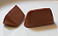

Il cioccolato (o cioccolata, specie se fuso) è un alimento derivato dai semi dell'albero del cacao, ampiamente diffuso e consumato nel mondo interno.
Nella produzione artigianale di qualità, il cioccolato è preparato utilizzando la pasta di cacao come realizzata e imballata nei paesi origine, con l'aggiunta di ingredienti e aromi. Nella produzione industriale o comunque di minor pregio qualitativo, è preparato miscelando il burro di cacao (la parte grassa dei semi di cacao) con polvere di semi di cacao, zucchero e altri ingredienti facoltativi, come il latte, le mandorle, le nocciole, il pistacchio o altri aromi.
Dalla miscelazione di diverse quantità di vari ingredienti (pasta di cacao, burro di cacao, zucchero, latte in polvere, etc.) derivano poi le diverse tipologie di cioccolato:
| Composizione per 100g. di cioccolato | |
|
 | |
|---|---|---|---|---|
| FONDENTE | AL LATTE | BIANCO | GIANDUIA | |
| Energia(kcal) | 515 | 545 | 529 | 543 |
| Lipidi(g) | 33.6 | 36.3 | 30.9 | 543 |
| Proteine(g) | 6.6 | 7.3 | 8.0 | 7.2 |
| Zuccheri(g) | 49.7 | 50.5 | 58.3 | 48.6 |